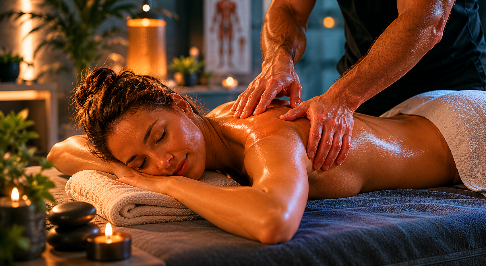

🏋️
Massage sportif
Préparation, récupération, entretien musculaire et relâchement des zones surchargées après l’entraînement.
Massothérapie sportive et thérapeutique pour athlètes, travailleurs actifs et personnes qui veulent bouger sans traîner leurs tensions comme un vieux sac de hockey.
Des soins orientés résultats, autant pour la performance sportive que pour le relâchement des tensions du quotidien.
Préparation, récupération, entretien musculaire et relâchement des zones surchargées après l’entraînement.
Approche précise pour tensions au dos, cou, épaules, jambes et inconforts liés au travail ou au sport.
Massage plus doux, ambiance calme et détente complète pour décrocher du stress et récupérer mentalement.

Chaque séance est ajustée selon ton niveau d’activité, tes douleurs, tes objectifs et ton seuil de pression.
À ajuster selon ses vrais prix. Pour la démo, ça donne déjà une page crédible.
Texte temporaire pour remplir la démo.
“J’avais les épaules barrées depuis des semaines. Après une séance, j’ai enfin retrouvé de la mobilité.”
“Approche professionnelle, pression parfaite et explications claires. Pas juste un massage random.”
“Excellent pour la récupération après l’entraînement. Je recommande avant que le corps envoie sa lettre de démission.”
Simple, direct, utile.
Non. L’approche sportive est utile pour les gens actifs, mais les soins peuvent aussi être orientés relaxation ou douleurs du quotidien.
Oui, reçu disponible. À valider selon la couverture de ton assureur.
45 minutes pour une zone précise, 60 minutes pour un soin complet standard, 90 minutes pour un travail plus profond.
Massothérapie MP — 123 rue de la Performance, Trois-Rivières, QC. Téléphone : 819-555-0123. Courriel : info@massotherapiemp.ca
Écrire pour réserver